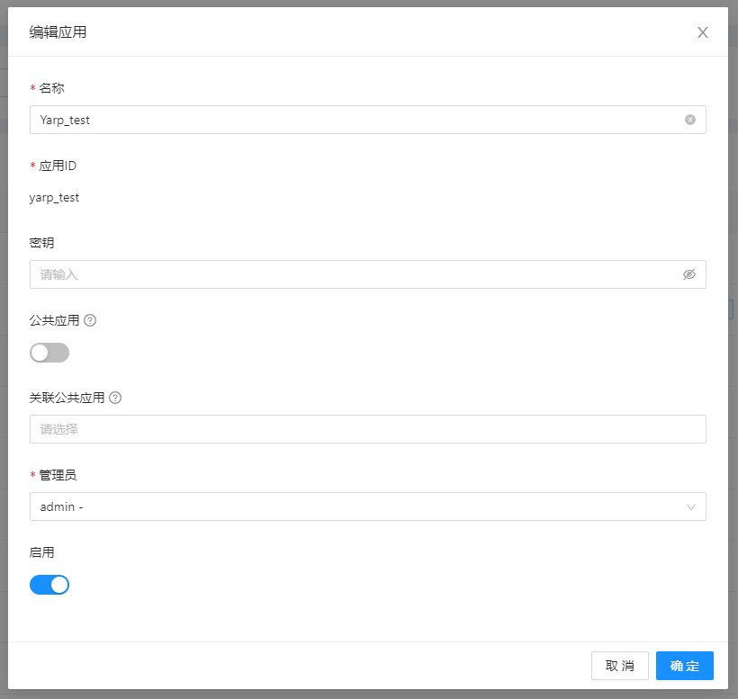
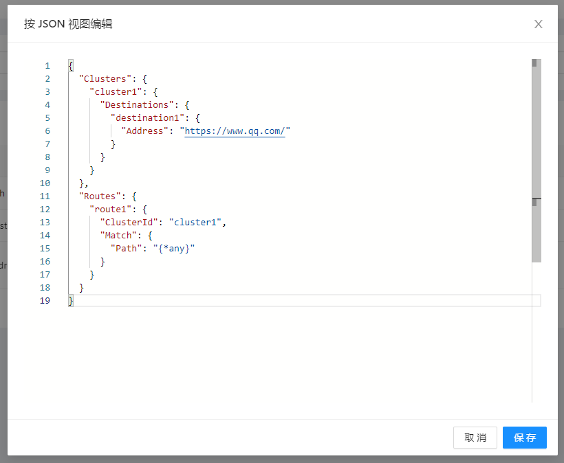

前言
YARP是微软开源的一个反向代理项目，英文名叫 Yet Another Reverse Proxy 。所谓反向代理最有名的那就是 nginx 了，没错 YARP 也可以用来完成 nginx 的大部分功能，比如根据不一样的域名代理到不一样的后端服务上。
既然它可以做反向代理，那么其实也就可以做服务网关了，类似 Ocelot ，当然缺少部分功能，比如限流降级等。
运行 YARP
YARP 使用起来非常简单，它只是一个类库而已。我们新建一个 ASP.NET Core 的空网站。然后使用 nuget 安装 Yarp.ReverseProxy 。
Install-Package Yarp.ReverseProxy -Version 1.0.0
修改 program.cs 文件为以下内容：
var builder = WebApplication.CreateBuilder(args);
builder.Services.AddReverseProxy()
.LoadFromConfig(builder.Configuration.GetSection("ReverseProxy"));
var app = builder.Build();
app.MapReverseProxy();
app.Run();
在 appsettings.json 文件添加 ReverseProxy 节点：
{
"Logging": {
"LogLevel": {
"Default": "Information",
"Microsoft": "Warning",
"Microsoft.Hosting.Lifetime": "Information"
}
},
"AllowedHosts": "*",
"ReverseProxy": {
"Routes": {
"route1" : {
"ClusterId": "cluster1",
"Match": {
"Path": "{**catch-all}"
},
}
},
"Clusters": {
"cluster1": {
"Destinations": {
"destination1": {
"Address": "https://www.baidu.com/"
}
}
}
}
}
}
我们配置一个集群cluster1，地址为百度的网址；再配置一个路由route1，匹配所有的url。这样当我们访问这个网站的时候所有的请求全部会代理给百度。让我们运行起来试一下：
 可以看到我们访问 localhost:5085 的地址百度的内容被渲染出来了。
可以看到我们访问 localhost:5085 的地址百度的内容被渲染出来了。
集成 AgileConfig 来热更新配置
通过以上我们简单的演示了 YARP 的使用。我们的演示配置文件还算简单，但是 YARP 的精髓其实都在配置文件里，如果你的代理策略很复杂那么 YARP 的配置就会相应的很复杂。
使用本地的 appsettings.json 显然每次更新配置文件太麻烦，而且需要重启 YARP 网关。以下我们演示下 YARP 如何集成 AgileConfig ，使得配置可以在线编辑，并且支持热更新。
AgileConfig 是一个轻量级的配置中心，可以方便的为 .NET 项目提供配置中心功能，项目地址：https://github.com/dotnetcore/AgileConfig 。
运行 AgileConfig 服务端
AgileConfig 服务端可以通过 docker 方便的部署起来。
sudo docker run \\
--name agile_config \\
-e TZ=Asia/Shanghai \\
-e adminConsole=true \\
-e db:provider=sqlite \\
-e db:conn="Data Source=agile_config.db" \\
-p 5000:5000 \\
#-v /your_host_dir:/app/db \\
-d kklldog/agile_config:latest
部署成功后，我们在应用界面新建一个应用：Yarp_test
在配置项编辑界面点击“编辑 JSON”，弹出 JSON 编辑视图，把原来 appsettings.json 文件里的ReverseProxy节点的内容复制进去。
点击“保存”>“发布” 。
集成 AgileConfig.Client
AgileConfig 配置成功后，我们需要在 YARP 网关项目上集成 AgileConfig.Client ，通过它来读取配置中心的配置。使用 nuget 安装 AgileConfig.Client ：
Install-Package AgileConfig.Client -Version 1.2.1.5
在 appsettings.json 里添加 AgileConfig 节点，里面配置相关应用的信息，并且删掉原来的ReverseProxy节点，因为已经不需要了。
{
"Logging": {
"LogLevel": {
"Default": "Information",
"Microsoft.AspNetCore": "Warning"
}
},
"AllowedHosts": "*",
"AgileConfig": {
"appId": "yarp_test",
"secret": "",
"nodes": "http://localhost:5000/"
}
}
修改 program.cs 文件为如下内容：
var builder = WebApplication.CreateBuilder(args);
//add agileconfig configuration provider
builder.Host.ConfigureAppConfiguration((_, bd) => {
bd.AddAgileConfig();
});
builder.Services.AddReverseProxy()
.LoadFromConfig(builder.Configuration);
var app = builder.Build();
app.MapReverseProxy();
app.Run();
修改完之后，我们运行一下 YARP 网关项目，如果访问localhost:5085能够显示百度的页面那么说明配置中心的配置已经被正确的读取到了。
热更新
如果上面的步骤都成功了，那么我们可以来尝试下配置的热更新。
打开 Agileconfig 的服务端，继续编辑以上配置，我们把集群的地址改成 www.qq.com ，改成腾讯的网管。点击“保存”>“发布”。不用重启 YARP 网关项目，我们直接刷新 localhost:5085 那个页面，可以看到现在显示的已经是腾讯的网页了。
看完本文有收获？请转发分享给更多人
推荐关注「DotNet」，提升.Net技能

点赞和在看就是最大的支持❤️


发表评论 取消回复